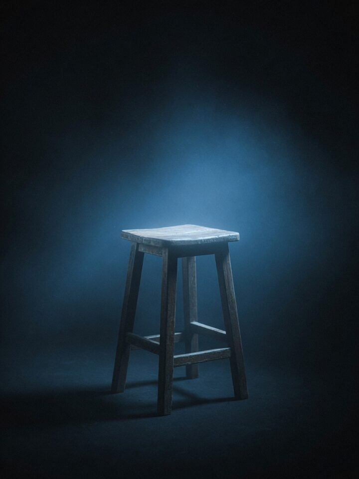
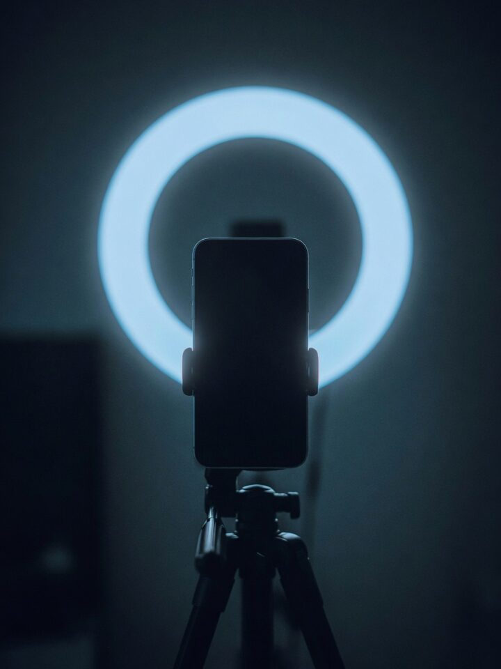

Program Pantau360 dan Ekraf
Belajar strategi konten
dari data, bukan tebakan.
Kelas daring gratis untuk kreator Indonesia. Enam modul, dari riset audiens sampai kerja sama brand, disusun Pantau360 bersama Ekraf.
Enam modul
Kenali audiens sebelum bikin konten
Modul 1 · 4 pelajaran

Posisi dan pilar konten
Modul 2 · 3 pelajaran

Hook, format, dan struktur
Modul 3 · 5 pelajaran
Kalender dan ritme produksi
Modul 4 · 3 pelajaran

Membaca data, bukan sekadar angka
Modul 5 · 4 pelajaran
Monetisasi dan kerja sama brand
Modul 6 · 4 pelajaran
Untuk siapa
Kelas ini untuk kreator yang sudah rutin mengunggah tetapi hasilnya terasa acak: satu video meledak, sepuluh berikutnya sepi, dan tidak jelas kenapa. Materinya ditulis untuk akun dengan seribu sampai seratus ribu pengikut di TikTok, Instagram, atau YouTube, tetapi prinsipnya sama di ukuran mana pun.
Kamu tidak perlu latar belakang pemasaran atau alat berbayar. Semua latihan dikerjakan dengan data yang sudah ada di akunmu sendiri. Kalau kamu baru mau mulai, kerjakan Modul 1 dan 2 dulu sebelum mengunggah apa pun.
Cara belajar
Tidak ada pendaftaran dan tidak ada tenggat. Setiap modul bisa dibaca dalam satu jam, dan latihannya dikerjakan langsung di akunmu sendiri.
- Mulai dari modul yang paling terasa jadi masalah, atau dari Modul 1 kalau ragu.
- Baca satu pelajaran, kerjakan latihannya di akunmu, baru lanjut ke pelajaran berikutnya.
- Tandai modul selesai di bagian bawah halaman. Progres tersimpan di browser ini, tanpa akun.
- Ulangi Modul 5 setiap bulan. Datamu berubah, cara membacanya tidak.
Tentang program
Pantau360
Pantau360 adalah perusahaan pemantauan media dan analitik sosial di Indonesia. Sehari-hari timnya membaca percakapan publik untuk merek dan lembaga. Kurikulum ini memindahkan cara kerja yang sama ke skala kreator perorangan: keputusan dibuat dari data yang ada, bukan dari perasaan setelah satu video sepi.
Ekraf
Ekraf, Kementerian Ekonomi Kreatif, menjalankan program pengembangan pelaku ekonomi kreatif, termasuk kreator konten. Lewat kemitraan ini, materi kelas dibuka gratis untuk siapa saja tanpa syarat pendaftaran.
Pertanyaan umum
Apakah kelas ini benar-benar gratis?
Ya. Tidak ada biaya dan tidak ada pendaftaran.
Apakah ada sertifikat?
Saat ini tidak ada.
Platform apa saja yang dibahas?
TikTok, Instagram, dan YouTube sebagai contoh utama. Prinsipnya berlaku juga untuk X, Facebook, dan platform lain yang punya analitik penonton.
Apakah progres saya tersimpan?
Tanda selesai disimpan di browser yang kamu pakai. Ganti perangkat atau hapus data browser, tandanya ikut hilang. Tidak ada akun dan tidak ada data yang dikirim ke server.